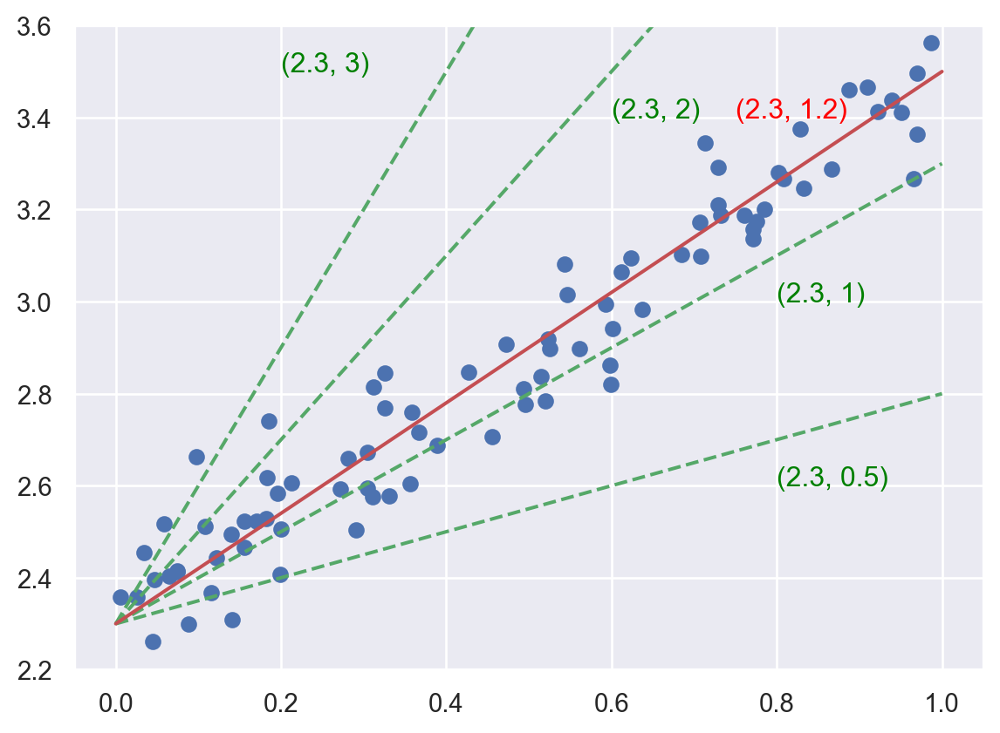
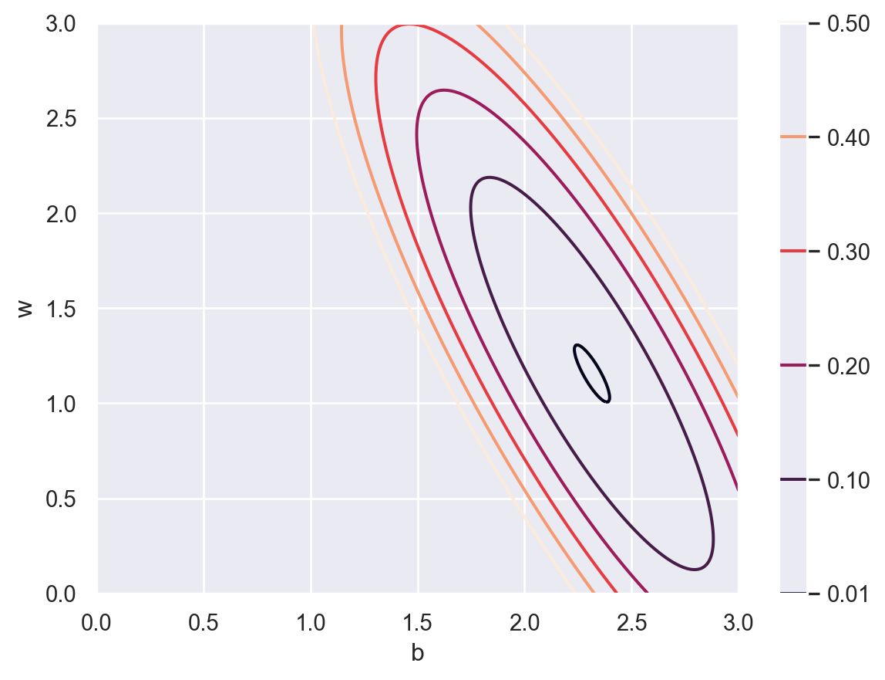
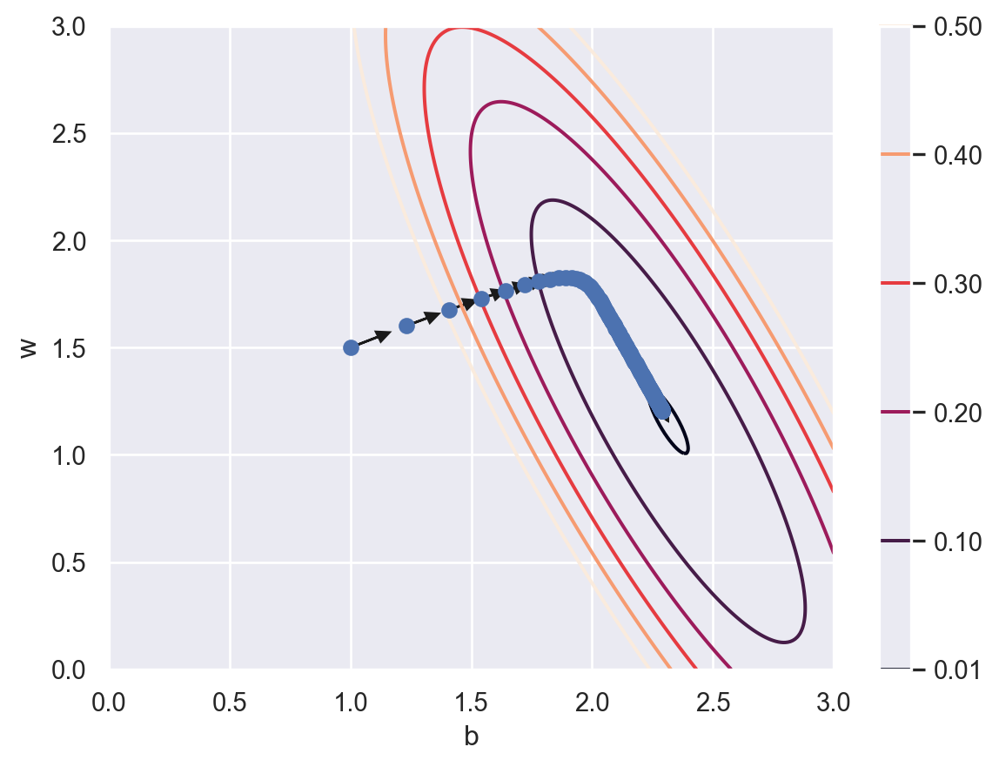
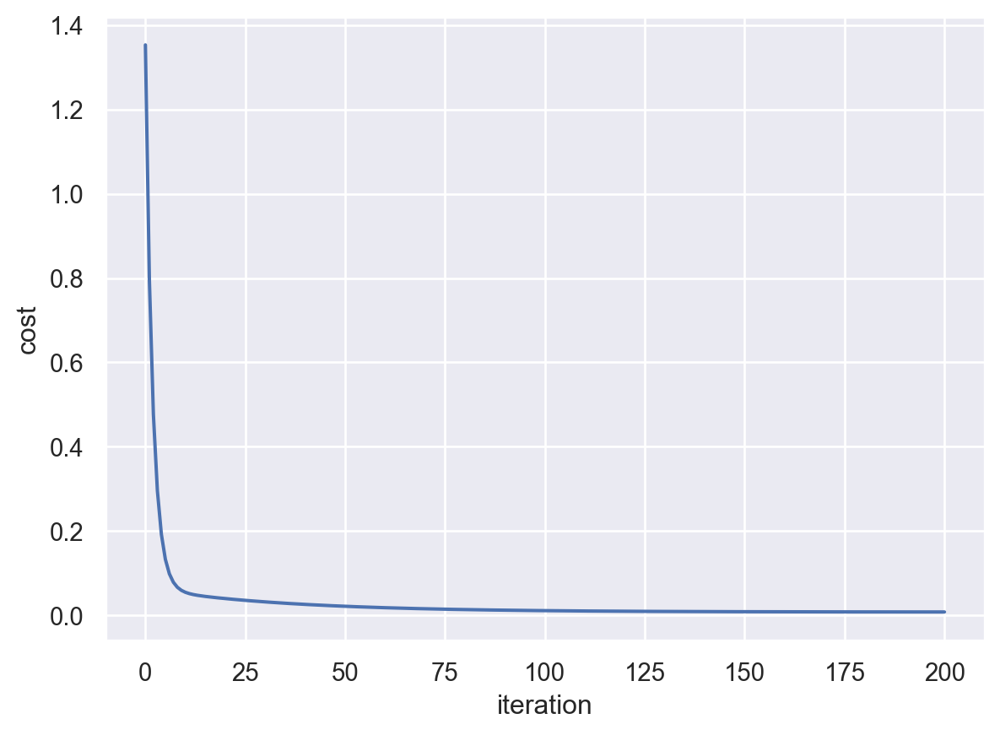

5 Intro to Pytorch
Most materials are based on [1].
5.1 Linear regression (math)
\[ \require{physics} \require{braket} \]
\[ \newcommand{\dl}[1]{{\hspace{#1mu}\mathrm d}} \newcommand{\me}{{\mathrm e}} \]
\[ \newcommand{\Exp}{\operatorname{E}} \newcommand{\Var}{\operatorname{Var}} \newcommand{\Mode}{\operatorname{mode}} \]
\[ \newcommand{\pdfbinom}{{\tt binom}} \newcommand{\pdfbeta}{{\tt beta}} \newcommand{\pdfpois}{{\tt poisson}} \newcommand{\pdfgamma}{{\tt gamma}} \newcommand{\pdfnormal}{{\tt norm}} \newcommand{\pdfexp}{{\tt expon}} \]
\[ \newcommand{\distbinom}{\operatorname{B}} \newcommand{\distbeta}{\operatorname{Beta}} \newcommand{\distgamma}{\operatorname{Gamma}} \newcommand{\distexp}{\operatorname{Exp}} \newcommand{\distpois}{\operatorname{Poisson}} \newcommand{\distnormal}{\operatorname{\mathcal N}} \]
We only consider the simplest case: simple linear regression (SLR). The idea is very simple. The dataset contains two variables (the independent variable \(x\) and the response variable \(y\).) The goal is to find the relation between \(x\) and \(y\) with the given dataset. We assume their relation is \(y=b+wx\). How do we find \(b\) and \(w\)?
Let us first see an example. We would like to find the red line (which is the best fitted curve) shown below.
5.1.1 Parameter space
The key here is to understand the idea of “parameter space”. Since we already know that the function we are looking for has a formula \(y=b+wx\), we could use the pair \((b, w)\) to denote different candidates of our answer. For example, the following plot show some possibilities in green dashed lines, while each possiblity is denoted by \((b, w)\). Then the problem is reworded as to find the best pair \((b, w)\).

5.1.2 Loss function
The “best” is defined in the following way. The dataset is given \(\{(x_i, y_i)\}\). If we choose a pair of parameters \((b,w)\), we will have an estimated regression line, as well as a set of estimated \(\hat{y_i}\). The idea is to let the difference between \(y_i\) and \(\hat{y_i}\) is as small as possible. In other words, a loss function \(J\) is defined as follows:
\[ J_{\{(x_i,y_i)\}}(b,w)=\frac1N\sum_{i=1}^N(y_i-\hat{y_i})^2=\frac1N\sum_{i=1}^N(y_i-b-wx_i)^2 \tag{5.1}\] and we are expected to find the \((b,w)\) such that the loss function is minimized. The contour map of \(J\) is shown below.

5.1.3 Gradient Descent
We use a technique called “gradient descent” to find the global minimal of \(J\). We start from a random point. For example \((1.0, 1.5)\). Then we find a direction where the cost \(J\) reduces the most, and move in that direction. This direction is computed by the gradient of the cost \(J\), and this is the reason why the algorithm is called “gradient descent”. After we get to a new point, we evaluate the new gradient and move in the new direction. The process is repeated and we are expected to get close to the minimal point after several iterations. Just like shown in the following plot.

The parameter updating rule is shown below. The \(\eta\) is called the learning rate. It is a hyperparameter that is used to control the learning process.
\[ \begin{aligned} &\pdv{J}{b}=\frac1N\sum_{i=1}^N2(y_i-b-wx_i)(-1),\quad &b_{new} = b_{old}-\eta*\pdv{J}{b},\\ &\pdv{J}{w}=\frac1N\sum_{i=1}^N2(y_i-b-wx_i)(-x_i),\quad &w_{new} = w_{old}-\eta*\pdv{J}{w}, \end{aligned} \tag{5.2}\]
Learning rate \(\eta\)
Generally speaking, larger \(\eta\) will move faster to the global minimal, but might be jumpy which cause it harder to converge. On the other side, smaller \(\eta\) moves in a more stable fashion, but may take a long time to converge. See the following examples.

In the first example, \(\eta\) is too small, that after 200 iterations it is not very close to the minimal. In the second example, \(\eta\) becomes large. Although it gets to somewhere near the minimal, the path is very jumpy. It is able to converge only because the problem is indeed an easy one.
We may record the curve of the cost function.
After 200 iterations, the parameters are (2.291241352364798, 1.203587494484257).
The cost is close to \(0\) after 200 iterations and seems to be convergent. Therefore we believe that we are close to the minimal point. The point we get is (2.291241352364798, 1.203587494484257).
5.1.4 Summary
Let us summarize the example above and generalize it to the general case.
- Let \(\{(X_i, y_i)\}\) be a given dataset. Assume that \(y=f_{\Theta}(X)\) where \(\Theta\) is the set of all parameters.
- The cost function \(J_{\Theta, \{(X_i, y_i)\}}\) is defined.
- To find the minimal point of the cost function, the gradient descent is applied:
- Start from a random initial point \(\theta_0\).
- Compute the gradient \(\nabla J\) and update \(\theta_i=\theta_{i-1}- \eta \nabla J\) and repeat the process multiple times.
- Draw the learning curve and determine when to stop. Then we get the estimated best parameters \(\hat{\Theta}\).
- Our model under this setting is sovled. We then turn to evaluation phase.
Note
The above process can be further developped. We will discuss many of them in later sections.
- The cost function is related to each concerte problem.
- To compute the gradient of the cost function, chain rule is usually used. In the setting of MLP which we will discuss later, the gradient computations with chain rule are summarized as the so-called Back propagation.
- We go through the data points to compute the graident. How many points do we use? What is the frenqucy to update the gradient? This belongs to the topic of mini-batch.
- Even when we know that the graident gives the best direction, sometimes we don’t really want to go in that direction, but make some modifications for some reason. To modify the direction, as well as choosing the learning rate \(\eta\), is the subject of optimizers.
5.2 Linear regression (numpy)
\[ \require{physics} \require{braket} \]
\[ \newcommand{\dl}[1]{{\hspace{#1mu}\mathrm d}} \newcommand{\me}{{\mathrm e}} \]
\[ \newcommand{\Exp}{\operatorname{E}} \newcommand{\Var}{\operatorname{Var}} \newcommand{\Mode}{\operatorname{mode}} \]
\[ \newcommand{\pdfbinom}{{\tt binom}} \newcommand{\pdfbeta}{{\tt beta}} \newcommand{\pdfpois}{{\tt poisson}} \newcommand{\pdfgamma}{{\tt gamma}} \newcommand{\pdfnormal}{{\tt norm}} \newcommand{\pdfexp}{{\tt expon}} \]
\[ \newcommand{\distbinom}{\operatorname{B}} \newcommand{\distbeta}{\operatorname{Beta}} \newcommand{\distgamma}{\operatorname{Gamma}} \newcommand{\distexp}{\operatorname{Exp}} \newcommand{\distpois}{\operatorname{Poisson}} \newcommand{\distnormal}{\operatorname{\mathcal N}} \]
We will translate everything from the previous sections into codes.
5.2.1 Prepare the dataset
We first randomly generate a dataset (X, y) for the linear regression problem.
We set the seed to be 42 for reproducing the results. We will also split the dataset into training and test sets.
We will only focus only on the training set in this Chapter.
5.2.2 Compute gradient
Recall Equation 5.1 and Equation 5.2
\[ \begin{aligned} J(b,w)&=\frac1N\sum_{i=1}^N(y_i-b-wx_i)^2,\\ \pdv{J}{b}&=\frac1N\sum_{i=1}^N2(y_i-b-wx_i)(-1),\\ \pdv{J}{w}&=\frac1N\sum_{i=1}^N2(y_i-b-wx_i)(-x_i). \end{aligned} \]
5.2.3 Gradient descent
In general we need to random select a starting point. Here for the purpose of comparing to what we get from previous section, we will use a manual selected starting point \((1, 1.5)\). We then follow the path and move for a few steps. Here we will use \(\eta=0.2\) as the learning rate.
p = np.array([1.0, 1.5])
lr = 0.2
plist = []
for _ in range(10):
J_i = J(p, X_train, y_train)
dJ_i = dJ(p, X_train, y_train)
p = p - lr * dJ_i
plist.append([p[0], p[1]])
plist[[1.462128976503838, 1.70260448274778],
[1.701791352506138, 1.7949449226054148],
[1.8284450974134463, 1.8316393022111805],
[1.8976247633456744, 1.840388291132826],
[1.937508248869905, 1.8352370440485253],
[1.96239470703006, 1.8233031967656035],
[1.9795421883017092, 1.8081901205764057],
[1.9926365306310478, 1.7917185352872653],
[2.0035512067846226, 1.7748049887103947],
[2.013240136591026, 1.7579075228763736]]You may compare the answer with the PyTorch implementation in Section 5.3.3.
5.2.4 Mini-batch and optimizers
Review the gradient formula Equation 5.2, the gradient is computed by looking at each given data point and putting the results together. Therefore it is possible to get the partial information of the gradient by just looking at part of the data. In other words, the updating process can be modify in the following way: divide the original dataset into several groups, run through each group to compute the gradient with the data in only one group and then update the parameters. In general there are three types:
- There is only 1 group: we update the parameters only once when we finish looking at all data points. This is the way we mentioned previously. It is called batch gradient descent.
- Every single point forms a group: we update the parameters eachtime we look at one data point. This method is called stocastic gradient descent (SGD). Since we compute the gradient with only one data point, it is expected that the direction is far from perfect, and the descent process is expected to be more “random”.
- Multiple groups of the same size are formed, with a reasonable group size and group number. This is called mini-batch gradient descent. It is the middle point between the above two methods. The batch size, which is the size of each group, is a very important hyperparameter for trainning.
Epochs
One epoch is the process that you see each data point exactly once, no matter what the batch size is.
Usually batch gradient descent is expected to have a more smooth trajection but move slowly, while SGD is expected to move faster to the minimal point but may never really get to it since the trajection is too jumpy. Mini-batch is meant to strike a balanced point by finding a good batch size. In the example below, we show the mini-batch gradient descent in the first 10 epochs.
p = np.array([1.0, 1.5])
lr = 0.2
batchsize = 32
RANDOMSEED = 42
N = X_train.shape[0]
indx = np.arange(N)
np.random.seed(RANDOMSEED)
np.random.shuffle(indx)
batches = []
batch_num = int(np.ceil(N / batchsize))
for i in range(batch_num):
last = np.minimum((i+1)*batchsize, N)
batches.append(indx[i*batchsize: last])
plist = []
for epoch in range(10):
for i in range(batch_num):
dJ_i = dJ(p, X_train[batches[i]], y_train[batches[i]])
p = p - lr * dJ_i
plist.append([p[0], p[1]])
plist[[1.8396487079358765, 1.8350571390420554],
[1.9759220547433842, 1.826737782139383],
[2.0168483670845423, 1.7772907765564647],
[2.043224019190362, 1.726425817587749],
[2.065921614604292, 1.6790714304374827],
[2.086528794877608, 1.635572387082582],
[2.1053898608038017, 1.595691439736766],
[2.1226730826892424, 1.559137786653576],
[2.1385131544625695, 1.5256351733493791],
[2.1530309370105214, 1.494929115540467]]
Non-shuffle version
Here is the result for the non-shuffle version. You could compare the results with what we do later.
p = np.array([1.0, 1.5])
lr = 0.2
batchsize = 32
N = X_train.shape[0]
indx = np.arange(N)
batches = []
batch_num = int(np.ceil(N / batchsize))
for i in range(batch_num):
last = np.minimum((i+1)*batchsize, N)
batches.append(indx[i*batchsize: last])
plist = []
for epoch in range(10):
for i in range(batch_num):
dJ_i = dJ(p, X_train[batches[i]], y_train[batches[i]])
p = p - lr * dJ_i
plist.append([p[0], p[1]])
plist[[1.8277028504755573, 1.8368193572906044],
[1.9607104449826838, 1.8293981130981023],
[2.001626059409397, 1.7815077539441087],
[2.0286935704191, 1.7321715193480243],
[2.0522055690695757, 1.686138097785071],
[2.0736381185747943, 1.6437403254745735],
[2.0933134526016604, 1.6047617600958677],
[2.111393711486754, 1.5689357968513453],
[2.1280105514943686, 1.5360086358936902],
[2.143282725696795, 1.505745878510758]]5.3 Linear regression (PyTorch)
5.3.1 Construct torch.Tensor
There are multiple ways to construct a tensor. I just discuss those confusing ones.
torch.Tensoris thePyTorchtensor data structure. Itself serves as the constructor of the class, therefore you may usetorch.Tensor(data)to construct a tensor. This is relative basic, and will have a defaultfloattype.torch.tensoris the recommendated function to construct a tensor from data. It has two benefits overtorch.Tensor: it will automatically induce the datatype from data instead of always usingfloat; and it is easier to change datatype with the argumentdtype.torch.as_tensoris a function to construct a tensor from data. If the original data is numpy array, this tensor shares data with it. This means that if one is changed, the other is changed as well.
import numpy as np
import torch
example = np.array([1, 2])
example_tensor0 = torch.Tensor(example)
example_tensor1 = torch.tensor(example)
example_tensor2 = torch.as_tensor(example)
print(f'Tensor: dtype: {example_tensor0.dtype}, tensor: dtype: {example_tensor1.dtype}')
print(f'tensor: {example_tensor1}, as_tensor: {example_tensor2}, original: {example}')
example[0] = 0
print(f'tensor: {example_tensor1}, as_tensor: {example_tensor2}, original: {example}')Tensor: dtype: torch.float32, tensor: dtype: torch.int32
tensor: tensor([1, 2], dtype=torch.int32), as_tensor: tensor([1, 2], dtype=torch.int32), original: [1 2]
tensor: tensor([1, 2], dtype=torch.int32), as_tensor: tensor([0, 2], dtype=torch.int32), original: [0 2]In general, it is recommended to use torch.as_tensor over torch.tensor (since for large data to create a view is much faster than to create a copy) and to use torch.tensor over torch.Tensor (due to the benefits mentioned above).
Scalar
A tensor with only one element is still a tensor in PyTorch. To use it as a scalar, you need to use itme() method.
Note that for numpy, before 2.0 version an array with one element is considered as scalar. However after 2.0, it behaves very similar to PyTorch.
datatype
The datatype in PyTorch is very strict. Many functions can work with only some of the datatypes. In most cases float and double are used. Other types may or may not be supported by a specific function.
However, there are a lot of ways to play with types. For example, you may use torch.tensor([1], dtype=torch.double) to directly construct a double tensor, or use torch.tensor([1]).double() to first construct an int tensor and then cast it into a double tensor.
another datatype note
numpy also has dtype setting but since it is not strict on it, we ignored it previous. Here is the case: the default setting for numpy is double type, or float64, while in PyTorch float, or float32, is commonly used. Since the precision is different, when cast from double to float, the number might be changed a little bit.
a = np.random.random(1)
b = torch.as_tensor(a)
c = torch.as_tensor(a, dtype=torch.float)
d = torch.as_tensor(a, dtype=float)
e = torch.as_tensor(a, dtype=torch.float64)
f = b.float()
g = f.double()
print(f'a: {a[0]}, type of a: {a.dtype}\n'
f'b: {b.item()}, type of b: {b.dtype}\n'
f'c: {c.item()}, type of c: {c.dtype}\n'
f'd: {d.item()}, type of d: {d.dtype}\n'
f'e: {e.item()}, type of e: {e.dtype}\n'
f'f: {f.item()}, type of e: {f.dtype}\n'
f'g: {g.item()}, type of e: {g.dtype}\n')a: 0.28093450968738076, type of a: float64
b: 0.28093450968738076, type of b: torch.float64
c: 0.28093451261520386, type of c: torch.float32
d: 0.28093450968738076, type of d: torch.float64
e: 0.28093450968738076, type of e: torch.float64
f: 0.28093451261520386, type of e: torch.float32
g: 0.28093451261520386, type of e: torch.float64
You may notice the difference from the example, and also take notes about the convetion of which setting is corresponding to which type. Note that dtype=float actually create double type.
In this notes we will use double type by setting dtype=float or torch.float64 to reduce the possibility of that small differences.
We now construct a PyTorch tensor version of the dataset we used in previous sections. The device part will be introduced later.
import numpy as np
from sklearn.model_selection import train_test_split
import torch
RANDOMSEED = 42
np.random.seed(RANDOMSEED)
device = 'cuda' if torch.cuda.is_available() else 'cpu'
X = np.random.rand(100)
y = 2.3 + 1.2 * X + np.random.randn(100) * 0.1
X_train, X_test, y_train, y_test = train_test_split(X, y, test_size=.15,
random_state=RANDOMSEED)
X_tensor_train = torch.as_tensor(X_train, device=device, dtype=float)
y_tensor_train = torch.as_tensor(y_train, device=device, dtype=float)
Back to
numpy
If we would like to turn a tensor back to numpy, usually we would like to remove it from related computation graphs and just keep the data. Therefore usually we would like to apply detach() method to the tensor before converting. Also later we will talk about devices. When taking GPU into consideration, we also want to send the tensor back to CPU before converting. Therefore the code to turn a PyTorch tensor to a numpy array is x.detach().cpu().numpy().
5.3.2 devices
We coulde use torch.cuda.is_available() to check whether we have GPU/CUDA supported devices. If the answer is no, we don’t need to change any codes and everything works fine but slow.
If we have GPU/CUDA supported devices, we could send our tensors to them and do computations there. Google Colab is a good place to play with it if we don’t have our own hardware.
In most cases we use to(device) method to send a tensor to a device. Sometimes some function has device=device argument to automatically construct tensors in a device. Note that if one needs to compute the gradient of a tensor and send the tensor to a device, we need to manually set requires_grad_(True) or create the tensor with device argument.
to(device)
When sending tensors to other devices by to, gradient info might be lost. Therefore if we need to send trainable tensors to GPU some special methods should be used (e.g. setting device when creating the tensor). However for the dataset we don’t need to worry about it.
Here are some examples, although they only makes sense in a GPU environment.
If you can see cuda in the output of type, it is a GPU tensor. Otherwise it is a CPU tensor. We may use to to convert a CPU tensor to be a GPU tensor. If this tensor requires gradient, we should set it manually.
It is usually recommended to write codes with device in mind like above, since the codes work for both CPU and GPU machines.
5.3.3 Gradient
PyTorch can use autograd to automatically compute the gradient of given formula. All computations are done within the context of tensors. The biggest difference between PyTorch tensor and numpy array is that PyTorch tensor carries gradient infomation on its own.
The step is very easy: first use PyTorch tensor to write a formula, enable gradients on correct tensors, and then use the backward() method.
b = torch.tensor(1, dtype=float, device=device, requires_grad=True)
w = torch.tensor(1.5, dtype=float, device=device, requires_grad=True)
loss = ((y_tensor_train - b - w * X_tensor_train)**2).mean()
loss.backward()
print(f'db: {b.grad}, dw: {w.grad}')db: -2.310644882519191, dw: -1.0130224137389We could manually compute the first few iterations and record the results. You may compare it with the numpy implementation in Section 5.2.3. The answer is exactly the same.
b = torch.tensor(1, dtype=float, device=device, requires_grad=True)
w = torch.tensor(1.5, dtype=float, device=device, requires_grad=True)
lr = 0.2
plist = []
for _ in range(10):
loss = ((y_tensor_train - b - w * X_tensor_train)**2).mean()
loss.backward()
with torch.no_grad():
b -= lr * b.grad
w -= lr * w.grad
b.grad.zero_()
w.grad.zero_()
plist.append([b.item(), w.item()])
plist[[1.462128976503838, 1.70260448274778],
[1.701791352506138, 1.7949449226054148],
[1.8284450974134463, 1.8316393022111805],
[1.8976247633456746, 1.840388291132826],
[1.9375082488699051, 1.8352370440485253],
[1.9623947070300602, 1.8233031967656035],
[1.9795421883017095, 1.8081901205764057],
[1.992636530631048, 1.7917185352872653],
[2.003551206784623, 1.7748049887103945],
[2.013240136591026, 1.7579075228763734]]
Note
The code has some tricky parts. The main issue is to let PyTorch know which gradient infomation should be kept, which should not. In this code, to make it run correctly, we need to pay attention to the following three things:
- Before updating
bandw,with torch.no_grad()should be used, to tellPyTorchdon’t compute gradient here. - When updating
bandw, we should use the in-place syntaxb -= dbinstead ofb = b - db. Again, the reason is related to updating gradient: the out-of-place syntaxb = b - dbwill lose the grad info. - After updating
bandw, we need to zero out the grad info by applyingb.grad.zero_()andw.grad.zero_().
We will skip mini-batch gradient descent here, and leave it to the next section with a more systematic treatment.
5.3.4 Optimizers
After we get the gradient, there are still many tricks to move one step further. We already talked about the learning rate before. It is not the only case. Another example is that sometimes we don’t really want to move in the direction given by the gradient, but we want to modify it a little bit. All these tricks are combined together and are called optimizers.
An optimizer is a set of rules to update parameters after the gradient is computed. We already talked about SGD (stochastic gradient descent). Other common ones include RMSprop and Adam. In general, Adam is the generic best optimizer. If you don’t know which optimizer to use, Adam is always the go-to choice.
Here we rewrite our previous code by optimizers. We use SGD in this example. Again, we may compare the results to Section 5.2.3 and Section 5.3.3.
from torch.optim import SGD
import torch
lr = 0.2
b = torch.tensor(1, dtype=float, device=device, requires_grad=True)
w = torch.tensor(1.5, dtype=float, device=device, requires_grad=True)
optimizer = SGD([b, w], lr=lr)
plist = []
for epoch in range(10):
loss = ((y_tensor_train - b - w*X_tensor_train)**2).mean()
loss.backward()
optimizer.step()
optimizer.zero_grad()
plist.append([b.item(), w.item()])
plist[[1.462128976503838, 1.70260448274778],
[1.701791352506138, 1.7949449226054148],
[1.8284450974134463, 1.8316393022111805],
[1.8976247633456746, 1.840388291132826],
[1.9375082488699051, 1.8352370440485253],
[1.9623947070300602, 1.8233031967656035],
[1.9795421883017095, 1.8081901205764057],
[1.992636530631048, 1.7917185352872653],
[2.003551206784623, 1.7748049887103945],
[2.013240136591026, 1.7579075228763734]]5.3.5 Use class to describe the model
We now want to upgrade the code we wrote in previous sections in terms of classes, since it is a good way to wrap up our own code.
import torch.nn as nn
class LR(nn.Module):
def __init__(self, *args, **kwargs) -> None:
super().__init__(*args, **kwargs)
self.b = nn.Parameter(torch.tensor(1, requires_grad=True, dtype=float))
self.w = nn.Parameter(torch.tensor(1.5, requires_grad=True, dtype=float))
def forward(self, x):
return self.b + self.w * x
RANDOMSEED = 42
torch.manual_seed(RANDOMSEED)
device = 'cuda' if torch.cuda.is_available() else 'cpu'
model = LR().to(device)
model.state_dict()OrderedDict([('b', tensor(1., dtype=torch.float64)),
('w', tensor(1.5000, dtype=torch.float64))])We could use model.state_dict() to look at the parameters of the model. Another way to see the parameters is to use model.parameters() method. The latter will return an iterator that help you go through all parameters.
Parameter containing:
tensor(1., dtype=torch.float64, requires_grad=True)
Parameter containing:
tensor(1.5000, dtype=torch.float64, requires_grad=True)Now we reproduce the training code for LR class.
from torch.optim import SGD
def loss_fn(yhat, y):
return ((yhat-y)**2).mean()
lr = 0.2
optimizer = SGD(model.parameters(), lr=lr)
epoch_num = 10
plist = []
for epoch in range(epoch_num):
model.train()
yhat = model(X_tensor_train)
loss = loss_fn(yhat, y_tensor_train)
loss.backward()
optimizer.step()
optimizer.zero_grad()
p = model.state_dict()
plist.append([p['b'].item(), p['w'].item()])
plist[[1.462128976503838, 1.70260448274778],
[1.701791352506138, 1.7949449226054148],
[1.8284450974134463, 1.8316393022111805],
[1.8976247633456746, 1.840388291132826],
[1.9375082488699051, 1.8352370440485253],
[1.9623947070300602, 1.8233031967656035],
[1.9795421883017095, 1.8081901205764057],
[1.992636530631048, 1.7917185352872653],
[2.003551206784623, 1.7748049887103945],
[2.013240136591026, 1.7579075228763734]]5.3.6 Using standard modules
We hand write our models and set parameters in our previous versions. PyTorch provides many standard modules that we can use directly. For example, the linear regression model can be found in nn.modules as Linear, while our loss function is the mean square differene function which is MSELoss from nn.
from torch.nn.modules import Linear
from torch.nn import MSELoss
class BetterLR(nn.Module):
def __init__(self, *args, **kwargs) -> None:
super().__init__(*args, **kwargs)
self.linear = Linear(in_features=1, out_features=1)
self.linear.bias = torch.nn.Parameter(torch.tensor([1.0], dtype=float))
self.linear.weight = torch.nn.Parameter(torch.tensor([[1.5]], dtype=float))
def forward(self, x):
return self.linear(x)
lr = 0.2
device = 'cuda' if torch.cuda.is_available() else 'cpu'
model2 = BetterLR().to(device)
optimizer2 = SGD(model2.parameters(), lr=lr)
epoch_num = 10
plist = []
for epoch in range(epoch_num):
model2.train()
yhat = model2(X_tensor_train.reshape(-1, 1))
loss2 = MSELoss(reduction='mean')(yhat, y_tensor_train.reshape(-1, 1))
loss2.backward()
optimizer2.step()
optimizer2.zero_grad()
p = model2.state_dict()
plist.append([p['linear.bias'].item(), p['linear.weight'].item()])
plist[[1.462128976503838, 1.70260448274778],
[1.701791352506138, 1.7949449226054148],
[1.8284450974134463, 1.8316393022111805],
[1.8976247633456746, 1.840388291132826],
[1.9375082488699051, 1.8352370440485253],
[1.9623947070300602, 1.8233031967656035],
[1.9795421883017095, 1.8081901205764057],
[1.992636530631048, 1.7917185352872653],
[2.003551206784623, 1.7748049887103945],
[2.013240136591026, 1.7579075228763734]]
Initialize the parameters
In all our examples we initialize the parameters to be \((1, 1.5)\) for the purpose of comparision. In most cases, we don’t manually set the intial values, but use random numbers. In this case, we simply delete the manual codes.
Caution
Note that if we directly change our function to the standard one we will encounter some issues. The main reason is that our previous code is an oversimplifed version that we treat b and w as two scalars. They are scalars in our particular problem, but it is better to treat them as a special case of tensors for the purpose of better generalization. Actually based on the standard functions from PyTorch (as well as many others like sklearn) X and y are expected to be 2D tensors. This is the reason why there are some strange reshape(-1, 1 ) in the codes.
We will reconstruct it in the later sections.
5.4 Dataloader
5.4.1 Convert the previous dataset using DataLoader
Usually we use a class to provide data. The class is based on Dataset class, and need to implement the constructor, __getitem__ method and __len__ method. Here is an example.
Caution
Note that we directly change X and y to be 2D tensors when we create the dataset.
from torch.utils.data import Dataset
class MyData(Dataset):
def __init__(self, x, y):
self.x = torch.tensor(x, dtype=float).reshape(-1, 1)
self.y = torch.tensor(y, dtype=float).reshape(-1, 1)
def __getitem__(self, index):
return (self.x[index], self.y[index])
def __len__(self):
return len(self.y)
train_data = MyData(X_train, y_train)
train_data[1](tensor([0.7713], dtype=torch.float64), tensor([3.1575], dtype=torch.float64))Then we use Dataloader to feed the data into our model.
It is used in the following way.
lr = 0.2
epoch_num = 10
device = 'cuda' if torch.cuda.is_available() else 'cpu'
model = BetterLR().to(device)
optimizer = SGD(model.parameters(), lr=lr)
plist = []
for epoch in range(epoch_num):
for X_batch, y_batch in train_loader:
yhat = model(X_batch)
loss = MSELoss(reduction='mean')(yhat, y_batch)
loss.backward()
optimizer.step()
optimizer.zero_grad()
p = model.state_dict()
plist.append([p['linear.bias'].item(), p['linear.weight'].item()])
plist[[1.823910885110298, 1.8337838971747065],
[1.943046588179278, 1.8159156063329505],
[2.008997965681829, 1.7804701154492042],
[2.0285249013384035, 1.7270125310793967],
[2.0563058412652087, 1.6825156563053996],
[2.0699681006441395, 1.6356185362954465],
[2.105228875384819, 1.6040273694037541],
[2.0967822112836743, 1.552514187091518],
[2.124683201405048, 1.5249842249986072],
[2.1368486965881486, 1.493812615037102]]When applying mini-batch, usually we will shuffle the dataset. If we disable the shuffle here as well as the shuffle in numpy case, you will see that we get exactly the same answer.
Non-shuffle version
Here is the result for non-shuffle version.
from torch.utils.data import DataLoader
lr = 0.2
epoch_num = 10
device = 'cuda' if torch.cuda.is_available() else 'cpu'
model = BetterLR().to(device)
optimizer = SGD(model.parameters(), lr=lr)
train_loader = DataLoader(dataset=train_data, batch_size=32, shuffle=False)
plist = []
for epoch in range(epoch_num):
for X_batch, y_batch in train_loader:
yhat = model(X_batch)
loss = MSELoss(reduction='mean')(yhat, y_batch)
loss.backward()
optimizer.step()
optimizer.zero_grad()
p = model.state_dict()
plist.append([p['linear.bias'].item(), p['linear.weight'].item()])
plist[[1.8277028504755573, 1.8368193572906044],
[1.9607104449826838, 1.8293981130981023],
[2.001626059409397, 1.7815077539441087],
[2.0286935704191, 1.7321715193480243],
[2.0522055690695757, 1.686138097785071],
[2.0736381185747943, 1.6437403254745735],
[2.0933134526016604, 1.6047617600958677],
[2.111393711486754, 1.5689357968513453],
[2.1280105514943686, 1.5360086358936902],
[2.143282725696795, 1.505745878510758]]You may notice that we use some not-very-elegent way to display the result. Don’t worry about it. We will work on a better solution in the next section.
5.4.2 Rewrite using random_split
It is possible to purely use PyTorch instead of going through sklearn. After we get the Dataset, we could use random_split to create training set and testing set.
from torch.utils.data import random_split
import numpy as np
dataset = MyData(X, y)
train_data, val_data = random_split(dataset, [.85, .15], generator=torch.Generator().manual_seed(42))
train_loader = DataLoader(train_data, batch_size=32, shuffle=True)
val_loader = DataLoader(val_data, batch_size=32)5.5 Exercises
Exercise 5.1 Try to reconstruct all the plots in Section Section 5.1.